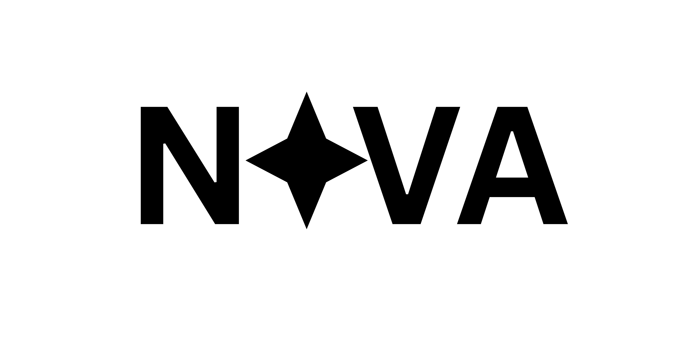

Advancing ethical cognitive enhancement
through evidence-based policy
NOVA Policy Network develops regulatory frameworks and ethical guidelines for cognitive enhancement technologies, neuropharmaceuticals, and mind-interface systems
Project SENTIENT
Learn More
Smart Ethical Neuroenhancement Tracking and International Equity Network
A comprehensive global mapping and monitoring platform designed to track cognitive enhancer usage patterns across countries, age groups, and sectors. The system features an advanced data collection dashboard that provides real-time insights into enhancement adoption in military, academic, and corporate environments. SENTIENT includes sophisticated country-by-country policy comparison tools and maintains an early warning system to detect potential misuse or performance doping incidents before they become widespread issues.
NEURALPACT
Learn More
Neuroethical Universal Regulation and Access Law: Pact for Cognitive Transparency
A groundbreaking UN-style compact establishing baseline rights and safety regulations for cognitive enhancement technologies. NEURALPACT introduces a comprehensive Bill of Cognitive Rights that protects individual autonomy while establishing clear military-use restrictions and robust anti-coercion clauses for workplace environments. The framework includes sophisticated international enforcement mechanisms designed to ensure compliance across participating nations and create standardized protection protocols for cognitive liberty.
ATHENA Directive
Learn More
Advancing Thought Enhancement Norms & Access
An innovative policy framework coupled with a comprehensive innovation roadmap designed to ensure safe development and deployment of cognitive enhancement technologies. The directive establishes a sophisticated tiered approval system for cognitive enhancers while implementing access-based affordability models to prevent economic discrimination. ATHENA includes specialized teen and youth protection programs alongside detailed ethical deployment guidelines for pharmaceutical companies developing cognitive enhancement solutions.
Project LIMINAL
Learn More
Legal Intelligence for Mind Intervention, Neuroaccess, and Autonomy Law
A comprehensive legal theory and constitutional proposal establishing the fundamental concept of mental sovereignty in the digital age. LIMINAL develops an advanced legal model of "cognitive consent" while pioneering thought-privacy and neurodata law frameworks. The project provides robust protection from enhancement mandates through a detailed cognitive freedom constitutional framework, ensuring individuals maintain complete autonomy over their mental enhancement decisions and neurological data.
MINDCODE Index
Learn More
Monitoring the International Neurodrug & Cognitive Optimization Data Ecosystem
A cutting-edge real-time policy and safety index system for neurodrugs featuring an extensive open database of cognitive enhancers with detailed safety profiles. MINDCODE implements a sophisticated scoring system that evaluates safety levels, abuse potential, and legal status across different jurisdictions. The platform includes an open-source API enabling public tracking tools and features an innovative "Nutritional Label" system that empowers individuals to make fully informed decisions about cognitive enhancement options.

© 2025 NOVA Policy Network. All rights reserved.
GitHub